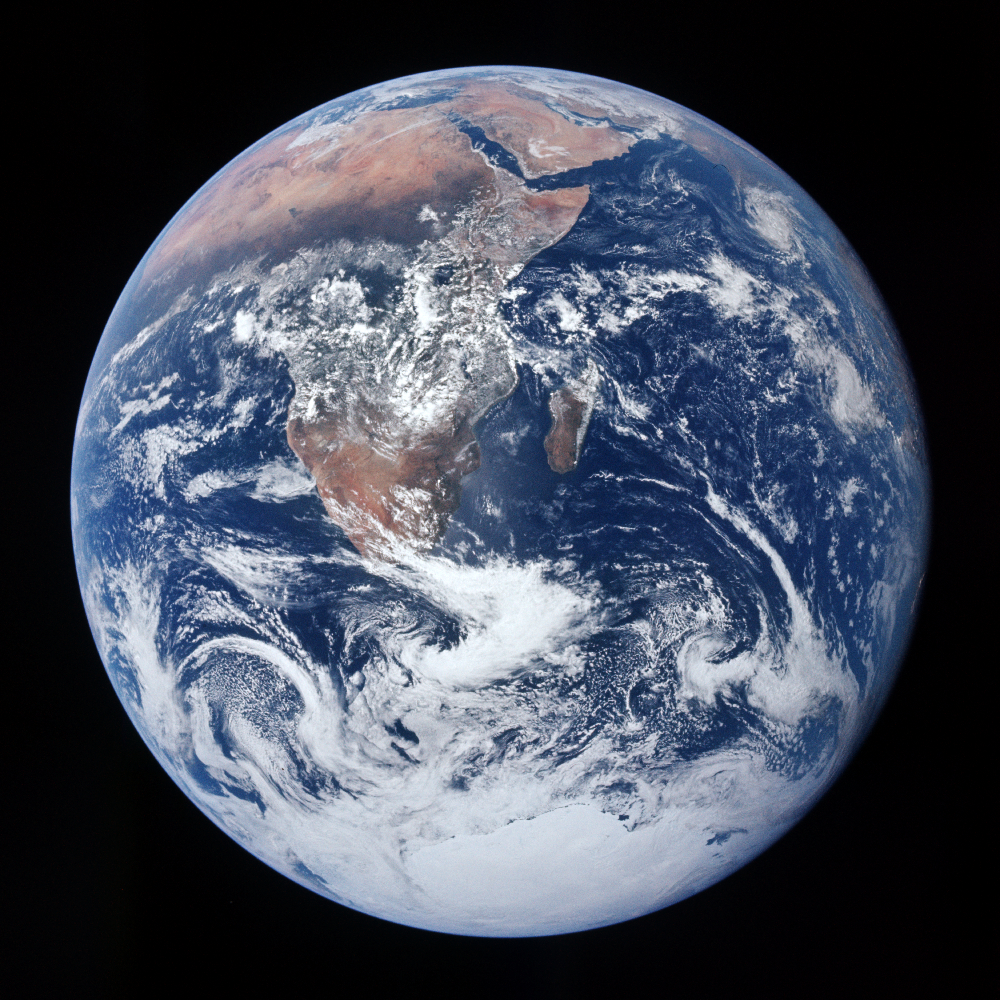

1. Το Μεγάλο Πανόραμα: Από τις Σαβάνες στα Αστέρια
Στο 21ο και τελευταίο μάθημα του εμβληματικού αυτού κύκλου, η καθηγήτρια Μαρία Ευθυμίου προσφέρει στο ακροατήριο μια ανεπανάληπτη, συγκινητική και βαθιά φιλοσοφική σύνθεση: μια ανακεφαλαίωση ολόκληρης της ανθρώπινης περιπέτειας μέσα από την αλληλεπίδραση της ιστορικής αφήγησης, των εικαστικών αριστουργημάτων και των αυθεντικών μουσικών ακουσμάτων της υφηλίου.
Η αφήγηση επιστρέφει στην αφετηρία της: 300.000 χρόνια πριν, στις σαβάνες της Αφρικής, ένα ασθενικό δίποδο πρωτεύον, ο Homo sapiens, επιβιώνει χάρη στη γλώσσα, τη φαντασία και τη συνεργασία.
Η Πρώτη Γραφή & η «Κουτσή» Γεωργική Επανάσταση της Στέπας: Η αρχαιότερη σωζόμενη γραφή (Μεσοποταμία, περ. 3.400 π.Χ.) δεν κατέγραψε ποίηση αλλά λογιστική αποθήκης: «Δεν έχει γράμματα, αλλά ένα στάχυ σιταριού κι ένα σύμβολο που δηλώνει ότι η Μαρία Ευθυμίου κατέθεσε τόσα καλάθια στάρι!». Ενώ όμως η γεωργία ρίζωσε στην Εύφορη Ημισέληνο, στην κεντρική Ευρασία έμεινε «κουτσή» λόγω του άγονου εδάφους. Εκεί οι άνθρωποι έγιναν οι απόλυτοι νομάδες ιππείς —με τις γιγαντιαίες σκηνές του Ταμερλάνου που χωρούσαν ολόκληρο στράτευμα και τον ασύλληπτο τρόμο που ενέπνευσαν στη μεσαιωνική Ευρώπη (όπου γκραβούρες τους παρουσίαζαν φαντασιόπληκτα να ψήνουν ανθρώπους!).
Οι Μονολιθικές Εκκλησίες της Λαλιμπέλα & ο Κινεζικός Σεισμογράφος: Η βαθιά χριστιανική παράδοση της Αφρικής αποτυπώνεται στη Λαλιμπέλα της Αιθιοπίας, όπου οι ναοί λαξεύτηκαν ολόκληροι μέσα στον ηφαιστειακό βράχο από πάνω προς τα κάτω ως ένα συγκλονιστικό θαύμα πίστης. Παράλληλα, η ασύλληπτη τεχνογνωσία της Κίνας περιλάμβανε μηχανισμούς όπως ο αρχαίος σεισμογράφος με μαγνητικές ράβδους, όπου μπρούντζινες σφαίρες απελευθερώνονταν από στόματα δράκων και έπεφταν στα ανοιχτά στόματα βατράχων, υποδεικνύοντας με ακρίβεια την κατεύθυνση του σεισμού χιλιάδες χιλιόμετρα μακριά!

«Όταν κοιτάζεις εκείνο το παλαιολιθικό χέρι αποτυπωμένο με κόκκινη ώχρα στον τοίχο ενός σπηλαίου πριν από τριάντα χιλιάδες χρόνια, δεν βλέπεις έναν ξένο. Βλέπεις τον εαυτό σου! Βλέπεις την ίδια ανάγκη που έχουμε εσείς κι εγώ σήμερα να νικήσουμε τον χρόνο, να αφήσουμε ένα ίχνος, να πούμε στο σύμπαν ότι περάσαμε από αυτή τη Γη. Όλη η ιστορία του ανθρώπου δεν είναι τίποτα άλλο παρά αυτή η συνεχής, συγκλονιστική προσπάθεια να δώσει νόημα στο πέρασμά του!»
2. Η Μουσική & Εικαστική Σύνθεση των Πολιτισμών
Στη διάρκεια του τελικού μαθήματος, η ιστορικός συνοδεύει τα μεγάλα ιστορικά κεφάλαια με τους ήχους που γέννησε κάθε πολιτισμός:
- Οι Ήχοι της Στέπας: Το μογγολικό λαρυγγικό τραγούδι (Khöömei) και το βιολί με την κεφαλή αλόγου (Morin Khuur), που αποδίδουν τον άνεμο και τον καλπασμό στις απέραντες ευρασιατικές πεδιάδες.
- Η Μυστικιστική Ινδία & οι Αισθησιακοί Ναοί: Οι ινδικές ράγκες με το σιτάρ και η κοσμική απεικόνιση του Σίβα Ναταράτζα. Παράλληλα, στον ινδουισμό ο έρωτας (Kama) αποτελεί ιερή αξία δημιουργίας. Όπως σχολιάζει με αφοπλιστικό χιούμορ η καθηγήτρια μπροστά στα περίτεχνα ερωτικά ανάγλυφα των ναών: «Εσείς κι εγώ όταν τα βλέπουμε κοκκινίζουμε γιατί είμαστε του κατηχητικού! Ο μέσος Ινδός όμως στέκεται με βαθύ σεβασμό και δεν καταλαβαίνει γιατί μένουμε άναυδοι... Διάλεξα μια σεμνή σκηνή, με συγχωρείτε δηλαδή αλλά από ένα σημείο και πέρα πρέπει να είσαι πρωταθλητής γυμναστικής!».
- Η Γαλήνη του Ζεν: Ο αέρινος ήχος του φλάουτου μπαμπού Σακουχάτσι (Shakuhachi), η λιτότητα των ιαπωνικών βραχόκηπων και η αποδοχή της παροδικότητας των πραγμάτων.
- Ο Ισλαμικός Μυστικισμός: Το θρηνητικό καλαμένιο φλάουτο Νέι και ο στροβιλισμός των Δερβίσηδων του Ρουμί —το δεξί χέρι στραμμένο στον ουρανό για να λάβει τη χάρη, και το αριστερό στη γη για να τη μοιράσει στους ανθρώπους.
- Η Ευρωπαϊκή Πολυφωνία: Από τους βυζαντινούς ύμνους και τα γρηγοριανά μέλη, στην αρχιτεκτονική του Μπαχ και στον ανθρωπιστικό θρίαμβο της Ενάτης Συμφωνίας του Μπετόβεν.
Το Πανόραμα των Φωνών: Από τα Νανουρίσματα στο Gospel & το Fado:
- Τα Εβραϊκά Τραγούδια & Νανουρίσματα: Από τα σεφαραδίτικα τραγούδια της Θεσσαλονίκης μέχρι το γίντις νανούρισμα των Ασκεναζί: «Luli, luli, έξω βρέχει και φυσάει, κοιμήσου μωράκι μου γιατί ο κόσμος είναι γεμάτος αδικία... Βέβαια με τέτοια ορχήστρα δεν υπάρχει περίπτωση να κοιμηθεί μωρό, σας το υπογράφω ως γιαγιά! Αλλά έτσι ίσως να νανουρίστηκαν ο Αϊνστάιν, ο Φρόυντ κι ο Κάφκα!».
- Το Gospel της Mahalia Jackson: Η απαράμιλλη ερμηνεία του If you have needed the Lord before, you sure need Him now, γεννημένη από τους μαύρους σκλάβους των φυτειών. Η ιστορικός ανακαλεί τη δική της εμπειρία σε αφροαμερικανική εκκλησία: «Χορεύουν όλοι μαζί, ο ιερέας, ο καντηλανάφτης, κι εγώ μέσα σε αυτούς να χοροπηδώ! Μια πνευματική απογείωση που σπάει κάθε συμβατικότητα!».
- Το Fado & ο Ωκεανός (Amália Rodrigues): Στο πορτογαλικό Barco Negro αποτυπώνεται η τραγωδία των θαλασσοπόρων —όπου πάνω από 3 εκατομμύρια ναυτικοί πέθαναν μόνο από σκορβούτο και μόλις ένας στους τρεις επέστρεφε: «Άμα ακούς τη Mahalia Jackson και την Amália Rodrigues, μετά δεν τολμάς να τραγουδήσεις ούτε στο μπάνιο!».
- Το «Αναρχοαυτόνομο» Τραγούδι των Δερβίσηδων & η Καβαλρία των Κοζάκων: Πέρα από τον εκστατικό χορό, η λαϊκή μυστικιστική παράδοση των Σούφι στους τεκέδες κουβαλά έναν βαθιά αντιεξουσιαστικό, «αναρχοαυτόνομο» χαρακτήρα. Ακούγοντας τον ύμνο «Ήρθα σαν δούλος», η καθηγήτρια μεταφράζει τους συγκλονιστικούς στίχους: «Ταξίδεψα σε όλο τον κόσμο και κατάλαβα ότι τον διοικούν πέντε σουλτάνοι· πώς να ακούσουν αυτοί του ανθρώπου τον πόνο και την πίκρα; Ακούστε ρυθμό... μόνο μη μου ανεβείτε στις καρέκλες!». Κι αμέσως μετά, η μουσική μεταφέρεται στις ρωσικές στέπες, στη Χορωδία του Κόκκινου Στρατού και στους θρυλικούς Κοζάκους ιππείς που κατέκτησαν τη Σιβηρία για λογαριασμό των Τσάρων: «Αυτοί ήταν καταπληκτικοί ιππείς και τα τραγούδια τους είναι καθαρά αρσενικά, πάνω σε άλογα! Δεν υπάρχει περίπτωση να μπερδευτείς όταν τα ακούς!».
- Το Νανούρισμα των Μαύρων Σκλάβων (Mercedes Sosa): Αν το πλοίο του πορτογαλικού Barco Negro κουβαλούσε τον θρήνο των ναυτικών, τα αμπάρια του κουβαλούσαν συχνά Αφρικανούς σκλάβους. Στο σπαρακτικό αφρολατινοαμερικανικό νανούρισμα Duerme Negrito, που ερμηνεύει η θρυλική Mercedes Sosa, η μουσική συμπυκνώνει όλη την τραγωδία της δουλείας στη φυτεία: «Κοιμήσου, μαύρο μου μωράκι, γιατί η μάνα σου δουλεύει όλη μέρα στα χωράφια για σένα... κι αν δεν κοιμηθείς, θα έρθει ο άσπρος διάβολος και θα σου φάει τις πατουσούλες σου, τσικαπούμ, τσικαπούμ! Βέβαια, κι εδώ με τέτοια ενορχήστρωση πάλι δεν πρόκειται να κοιμηθεί το μωρό, αλλά το τραγούδι είναι συγκλονιστικό!».
- Το Ιταλικό Risorgimento & ο Verdi: Στο Va, pensiero του Nabucco, η όπερα ένωσε τους κατακερματισμένους Ιταλούς: «Έχω νύφη Ιταλίδα και ξέρω: τον επίσημο εθνικό τους ύμνο δεν τον ξέρουν, αλλά μόλις ακουστεί το Va, pensiero σηκώνονται όλοι όρθιοι!».

«Κοιτάξτε να δείτε το μεγαλείο της μουσικής σε όλη την ανθρώπινη ιστορία! Από το τραγούδι του νομάδα στις στέπες της Μογγολίας, στις ράγκες των Ινδών, στο φλάουτο του Ζεν στην Ιαπωνία, μέχρι το νέι των Σούφι και τις φούγκες του Μπαχ στην Ευρώπη: ο άνθρωπος, όποια γλώσσα κι αν μιλάει, όποιον θεό κι αν πιστεύει, έχει την ίδια ανάγκη να εκφράσει το ανείπωτο, τη χαρά, το πένθος και την αγάπη. Η μουσική είναι η μόνη παγκόσμια γλώσσα που αποδεικνύει ότι βαθιά μέσα μας είμαστε όλοι ένα!»
3. Τα Τρία Μεγάλα Κύματα της Ανθρώπινης Ιστορίας
Συνοψίζοντας την πορεία 300.000 ετών, η Μαρία Ευθυμίου διακρίνει τρεις κομβικές μεταβάσεις:
- 1ο Κύμα: Η Γεωργική Επανάσταση (10.000 π.Χ.): Η εγκατάλειψη του νομαδισμού, η εξημέρωση φυτών και ζώων, η γέννηση των πόλεων, της γραφής, των νόμων και των θεσμών.
- 2ο Κύμα: Η Αξονική Εποχή (800–200 π.Χ.): Η ταυτόχρονη φιλοσοφική και ηθική αφύπνιση σε Κίνα (Κομφούκιος, Λάο Τσε), Ινδία (Βούδας), Μέση Ανατολή (Εβραίοι Προφήτες, Ζωροάστρης) και Ελλάδα (Προσωκρατικοί, Σωκράτης, Πλάτων).
- 3ο Κύμα: Η Βιομηχανική & Ψηφιακή Επανάσταση (1750–Σήμερα): Η κυριαρχία των μηχανών, η κατάκτηση των ορυκτών καυσίμων, η διάσπαση του ατόμου, η εκτόξευση στο διάστημα και η ψηφιακή διασύνδεση.
Οι Μεγάλες Θεσμικές Τομές των Τριών Κυμάτων:
- Το Κτηματολόγιο του 1066 & το «Διαδίκτυο» της Μεταρρύθμισης: Η θεσμική ωρίμανση της Δυτικής Ευρώπης κρύβει συγκλονιστικές εκπλήξεις που συχνά μας κάνουν να μελαγχολούμε. Όταν το 1066 ο Νορμανδός Γουλιέλμος ο Κατακτητής περνά τη Μάγχη και καταλαμβάνει την Αγγλία, οργανώνει ανεξάρτητα δικαστήρια και συντάσσει αμέσως πλήρες εθνικό κτηματολόγιο (Domesday Book)! Όπως σχολιάζει με καυστικό αυτοσαρκασμό η καθηγήτρια: «Εδώ μπορείτε να βγάλετε τώρα τα χαρτομάντηλα! Αυτό που βλέπουμε είναι το αγγλικό κτηματολόγιο του 1066, που το οργάνωσε ένας Βίκινγκ που έπινε νερό μέσα σε κρανία! Τόσο καλά... Κλείνει η παρένθεση!». Αντίστοιχα, στον 16ο αιώνα, η Προτεσταντική Μεταρρύθμιση του Λούθηρου γίνεται η πρώτη κίνηση στην ιστορία που διεξάγει μαζικό επικοινωνιακό πόλεμο με αφίσες και φυλλάδια, αξιοποιώντας την τυπογραφία του Γουτεμβέργιου (800 χρόνια μετά την κινεζική εφεύρεσή της): «Η τυπογραφία τότε είναι ό,τι σήμερα το διαδίκτυο: κάτι ολοκαίνουργιο και πρωτοπόρο. Και οι Προτεστάντες είναι οι πρώτοι που την κάνουν όπλο προπαγάνδας, τυπώνοντας αφίσες όπου ο ίδιος ο διάβολος και ένας τράγος οδηγούν τον Πάπα πάνω σε τροχούς!».
- Από την Αξονική Εποχή στη Θεατρική Κάθαρση: Η αναζήτηση νοήματος στο 2ο Κύμα δεν γέννησε μόνο φιλοσοφικά ρεύματα αλλά και το θέατρο ως κοσμική κάθαρση: από το αρχαίο ελληνικό δράμα (Αισχύλος, Σοφοκλής) και την ελισαβετιανή Αγγλία του Σαίξπηρ, μέχρι τα ιαπωνικά θέατρα Νο (Noh) και Καμπούκι (Kabuki) —όπου αποκλειστικά άνδρες ηθοποιοί ενσαρκώνουν όλους τους ρόλους με περίτεχνες μάσκες και συμβολικές κινήσεις, αποδίδοντας την πάλη των ανθρώπινων παθών με τα πνεύματα.
- Το 3ο Κύμα: Η Μεταμόρφωση της Κοινωνίας & η Ψηφιακή Αυγή: Η βιομηχανική εποχή άλλαξε ριζικά τους κοινωνικούς ρόλους:
- Στους δύο Παγκόσμιους Πολέμους, οι γυναίκες εισήλθαν μαζικά στη βαριά βιομηχανία και την κατασκευή πυρομαχικών («On her their lives depend»), κερδίζοντας οριστικά την πολιτική τους χειραφέτηση και το δικαίωμα ψήφου.
- Στην καρδιά του Β΄ Π.Π., ο ιδιοφυής Βρετανός μαθηματικός Άλαν Τούρινγκ (Alan Turing) έσπασε τους κώδικες της μηχανής Enigma στο Bletchley Park, θέτοντας τα θεμέλια της πληροφορικής και των υπολογιστών —για να υποστεί μεταπολεμικά τον τραγικό χημικό ευνουχισμό υπό την τότε ομοφοβική νομοθεσία, δαγκώνοντας, κατά την παράδοση, ένα μήλο εμποτισμένο με κυάνιο.
- Από τις «Βρακοζώνες» του Μεϊτζί στους Καμικάζι & το «Οικονομικό Θαύμα»: Όταν τη δεκαετία του 1850 ο Αμερικανός ναύαρχος Πέρι εξαναγκάζει την Ιαπωνία σε εμπορική συμφωνία, οι Ιάπωνες συνειδητοποιούν τον κίνδυνο να τους καταπιούν οι Δυτικοί και παίρνουν μια ανεπανάληπτη ιστορική απόφαση: «Σκέφτηκαν: πώς θα σωθούμε; Να πάρουμε τα παραδείγματά τους και να γίνουμε πιο δυνατοί και καλύτεροι από αυτούς! Και επειδή ό,τι κάνουν το κάνουν συστηματικά και σοβαρά, τύπωσαν μέχρι και μπροσούρες για να μάθουν πώς ντύνονται οι Δυτικοί: πώς φοράνε τις κάλτσες, τις τιράντες και τις βρακοζώνες!». Αυτή η ασύλληπτη πειθαρχία μετέτρεψε την Ιαπωνία σε βιομηχανική υπερδύναμη, την οδήγησε όμως και στην ύβρη του Β΄ Παγκοσμίου Πολέμου. Στην απελπισμένη προσπάθεια να αναχαιτίσουν τα αμερικανικά αεροπλανοφόρα το 1944, γεννήθηκαν οι πτήσεις αυτοκτονίας των Καμικάζι (από τον σωτήριο «θείο άνεμο» που είχε βυθίσει τον στόλο του Κουμπλάι Χαν τον 13ο αιώνα). Όπως περιγράφει συγκλονισμένη η καθηγήτρια μπροστά στη φωτογραφία ενός νεαρού πιλότου: «Αυτό είναι ένα παλικαράκι που σε λίγο δεν θα υπάρχει, δεν θα βρουν τίποτα από αυτόν. Ο αξιωματικός τού δένει στο μέτωπο τη σημαία της Ιαπωνίας... Δείτε τη μορφή του: ήδη είναι αλλού, φεύγει!». Η ίδια συλλογική εργατικότητα έφερε και το δεύτερο μεταπολεμικό «οικονομικό θαύμα», ξεκινώντας από τα απαιτητικά ιαπωνικά σχολεία: «Βλέπεις τα παιδιά με τις κορδέλες στο κεφάλι που γράφουν: "Για να επιτύχεις πρέπει να κοπιάσεις σκληρά". Μήπως να παραγγείλουμε 10,5 εκατομμύρια τέτοιες κορδέλες και για την Ελλάδα; Δεν θα ήταν άσχημο!».

4. Τα Μεγάλα Ιστορικά Διδάγματα & η Παρακαταθήκη
Ολοκληρώνοντας τις 21 διαλέξεις της, η Μαρία Ευθυμίου μοιράζεται με το κοινό τέσσερις θεμελιώδεις αλήθειες που αναδύονται από τη μελέτη του παρελθόντος:
1. Η Ύβρις και η Παρακμή
Κανένας πολιτισμός, καμία αυτοκρατορία και κανένα κράτος δεν υπήρξε αιώνιο: οι Φαραώ της Αιγύπτου, η Μεσοποταμία, η αρχαία Αθήνα, η Ρώμη των Καισάρων, το Βυζάντιο, το Αραβικό Χαλιφάτο, οι Μογγόλοι του Τζένγκις Χαν, η αυτοκρατορική Κίνα, η Βρετανική Αυτοκρατορία όπου «ο ήλιος δεν έδυε ποτέ» —όλοι έφτασαν στο απόγειό τους και όλοι κατέρρευσαν.
Οι Προκολομβιανοί Πολιτισμοί: Οι Αζτέκοι ανήγειραν πυραμίδες με 365 βαθμίδες πιστεύοντας ότι χωρίς καθημερινές ανθρωποθυσίες ο ήλιος δεν θα ανέτελλε, ενώ οι Ίνκας χάραξαν ένα εκπληκτικό οδικό δίκτυο 20.000 χιλιομέτρων στις κορυφές των Άνδεων χωρίς τροχό ή σίδηρο. Κι όμως, κατέρρευσαν ταχύτατα μπροστά στους Ισπανούς κονκισταδόρες. Το χρυσάφι της Αμερικής κόσμησε τον Καθεδρικό Ναό της Σεβίλλης, αλλά οδήγησε την ισπανική αυτοκρατορία σε πληθωρισμό και παρακμή.
Ο Σταθμός Victoria της Βομβάης & το «Πανάκι» του Γκάντι: Η Βρετανική Αυτοκρατορία δεν κατασκεύαζε απλώς λιμάνια και σιδηροδρόμους· με επιβλητικά οικοδομήματα όπως ο σταθμός Victoria Terminus στη Βομβάη έστελνε στους υποτελείς το μήνυμα «Who is the boss». Απέναντι σε αυτή τη συντριπτική ισχύ, ο Μοχάντας Γκάντι ξεκίνησε ως σπουδαγμένος δικηγόρος στο Γιοχάνεσμπουργκ ντυμένος με εκλεκτό αγγλικό κασμίρι, για να πετάξει αργότερα τα δυτικά κοστούμια και να σταθεί απέναντι στην αυτοκρατορία φορώντας ένα απλό λευκό πανάκι στις οσφύς (dhoti) και απελευθερώνοντας την Ινδία με τη δύναμη της μη βίας.
Ο Παραμορφωμένος Ιδρυτής των Μινγκ & η Πρώιμη Φωτογραφία του 1860: Στην Κίνα, η απουσία κληρονομικής αριστοκρατίας επέτρεψε στον Ζου Γιουαντζάνγκ —έναν πάμφτωχο, δυσπρόσωπο νάνο γεμάτο εξογκώματα— να ηγηθεί λαϊκής εξέγερσης και να ιδρύσει την κολοσσιαία δυναστεία των Μινγκ («σε άλλη χώρα αυτό θα έμοιαζε επιστημονική φαντασία, στην Κίνα δεν τρέχει τίποτα: είναι ο Τσου, αφού τα κατάφερε!»). Κι όταν το 1860 τα ενωμένα αγγλογαλλικά στρατεύματα εισέβαλαν στην Απαγορευμένη Πόλη και ο αυτοκράτορας πέθαινε από συγκοπή στο παράθυρο, η ιστορική στιγμή αποτυπώθηκε σε μία από τις πρώτες φωτογραφίες στην παγκόσμια ιστορία, καταγράφοντας τη συγκλονιστική πτώση του κινεζικού γίγαντα.
Η «Αστυνομία της Γενειάδας», οι «Πάστες» της Αικατερίνης & ο Αγγλογαλλικός Ανταγωνισμός: Στη Ρωσία, ο γίγαντας (ύψους 2,10 μ.) Μέγας Πέτρος δεν διστάζει να φύγει ανώνυμα για ενάμιση χρόνο και να δουλέψει ως ανειδίκευτος εργάτης στα ναυπηγεία της Ολλανδίας για να κλέψει την τεχνογνωσία της Δύσης! Επιστρέφοντας, επιβάλλει τον εκσυγχρονισμό με μεθόδους που φτάνουν στο κωμικοτραγικό: «Επειδή οι Ολλανδοί που θαύμαζε δεν είχαν γενειάδες, απαγόρευσε τα μακριά γένια στη Ρωσία και ίδρυσε... αστυνομία της γενειάδας! Όποιον έπιαναν στον δρόμο με μακριά γενειάδα, του την έκοβαν επιτόπου!». Λίγες δεκαετίες αργότερα, η Γερμανίδα πριγκίπισσα Αικατερίνη η Μεγάλη παίρνει τη σκυτάλη, βαφτίζει τον εγγονό της «Κωνσταντίνο» ονειρευόμενη να τον στέψει Κωνσταντίνο ΙΒ΄ στην Αγία Σοφία, και καταπίνει εδάφη της Πολωνίας και της Οθωμανικής Αυτοκρατορίας —με τις ευρωπαϊκές γελοιογραφίες να την απεικονίζουν παχουλή (καθώς, όπως λέει γελώντας η καθηγήτρια, «στο μεταξύ πάχυνε γιατί έφαγε πολλές πάστες απ' το ζαχαροπλαστείο η "Δέσποινα"!»), να της σερβίρει ο διάβολος δύο «πάστες»: τη Βαρσοβία και την Κωνσταντινούπολη! Την ίδια εποχή, στον παγκόσμιο πόλεμο Αγγλίας και Γαλλίας για την κυριαρχία των θαλασσών και της Βόρειας Αμερικής (δεκαετία 1750), η γαλλική κυβέρνηση στέλνει στον Καναδά πλοία γεμάτα Γαλλίδες πόρνες για να αναπτερώσει το ηθικό των στρατιωτών της: «Αλλά επειδή ηττήθηκαν τελικά οι Γάλλοι, ή οι κοπέλες δεν έκαναν καλά τη δουλειά τους ή την παράκαναν καλά! Κι έτσι η Αγγλία τα πήρε όλα κι έφυγε, και έμεινε μόνη της να παίζει κουκλοθέατρο με τον κόσμο!».
Η παρακμή ξεκινά σχεδόν πάντα από την ύβρη: όταν ένας πολιτισμός πιστέψει ότι είναι ανώτερος από όλους τους άλλους, ότι κατέχει το μονοπώλιο της αλήθειας και ότι τίποτα δεν μπορεί να τον απειλήσει.
2. Η Ιστορία ως Αντίδοτο στον Φανατισμό & στον Σωβινισμό
Η ιστορία δεν υπάρχει για να μας κολακεύει ή να μας κάνει να νιώθουμε αυτάρεσκα «εκλεκτοί λαοί». Υπάρχει για να μας απαλλάξει από τις προκαταλήψεις και την άγνοια.
Το Ατλαντικό Δουλεμπόριο, η «Πανίδα» της Αυστραλίας & η Κατασκευή του Μίσους: Η ιστορία απογυμνώνει τη φρίκη της ανθρώπινης απανθρωπιάς. Στην Α΄ Σταυροφορία (1096), οι Σταυροφόροι κόβουν κεφάλια Μουσουλμάνων και τα εκτοξεύουν με καταπέλτες μέσα στα τείχη της Αντιόχειας («με τέτοιες εικόνες διδάσκονται την ιστορία οι Μουσουλμάνοι όλου του κόσμου και το μίσος φτάνει στα άκρα»). Επί τέσσερις αιώνες, οι Ευρωπαίοι (πατώντας πάνω σε προϋπάρχοντα δίκτυα Αφρικανών δουλεμπόρων στη Δυτική Αφρική, ενώ στην Ανατολική το δουλεμπόριο το έκαναν οι Άραβες) μεταφέρουν 11–12 εκατομμύρια Αφρικανούς στην Αμερική, επειδή άντεχαν στην ελονοσία και τον κίτρινο πυρετό. Τα τεκμήρια παγώνουν το αίμα: διαφημιστικές αφίσες αναγγέλλουν την άφιξη του πλοίου Mentor με «156 γερούς νέους μαύρους από την Γκάμπια μετά από ταξίδι 35 ημερών —έχει σημασία πόσες μέρες κράτησε το ταξίδι για να ξέρεις πόσο ταλαιπωρημένο είναι το "εμπόρευμα" και τι τιμή θα πληρώσεις!», ενώ «Το Φυλλάδιο του Καλού Δουλεμπόρου» («για να μάθεις καλά το επάγγελμά σου, ρε παιδί μου!») δείχνει τον αγοραστή να μαρκάρει τους σκλάβους με πυρωμένο σίδερο και να γλείφει τον ιδρώτα τους για να ελέγξει αν είναι υγιείς! Ακόμα πιο ασύλληπτο: όταν οι Βρετανοί φτάνουν στην Αυστραλία το 1770, κατατάσσουν τους γηγενείς Αβορίγινες στην... πανίδα της ηπείρου («θεωρήθηκαν ζώα και αναγνωρίστηκαν επίσημα ως άνθρωποι μόλις στη δεκαετία του 1970!»). Αντίστοιχα, η δαιμονοποίηση του «άλλου» εμφανίζεται παντού: από τις κινεζικές αφίσες των Μπόξερ που απεικονίζουν τον μισητό Άγγλο αποικιοκράτη ως τέρας («φαλακρό στο κεφάλι, γεμάτο τρίχες στο σώμα —αφού οι Κινέζοι είναι άτριχοι στο σώμα με πλούσια μαλλιά— να βγάζει καπνούς!»), μέχρι τα ναζιστικά σχολικά βιβλία όπου τα εβραιόπουλα ζωγραφίζονται σκοτεινά και κακότροπα και οι έντρομοι Γερμανοί πολίτες μετρούν με διαβήτες τις μύτες τους για να δουν αν πληρούν τις «άρειες προδιαγραφές»!
Η Μνήμη των Τατάρων & η Eurovision: Τα ιστορικά τραύματα αιώνων παραμένουν ζωντανά στη λαϊκή συνείδηση —από τα υπολείμματα της Χρυσής Ορδής στην Κριμαία και τον εκτοπισμό των Τατάρων μέχρι τους σύγχρονους διαγωνισμούς τραγουδιού: «Οι Τάταροι της Κριμαίας μισούν τους Ρώσους από τον καιρό της Χρυσής Ορδής κι οι Ρώσοι αυτούς... γι' αυτό και δεν ψήφισε κανένας Ρώσος το τραγούδι της Τατάρας Jamala στη Eurovision, παρότι όλη η υπόλοιπη Ευρώπη το ψήφισε!». Όταν γνωρίσεις το μεγαλείο του κινεζικού πολιτισμού, τη λεπτότητα της ιαπωνικής τέχνης, τη σοφία των ινδικών κειμένων, το βάθος του ισλαμικού στοχασμού και τους αγώνες των λαών της Αφρικής και της Αμερικής, παύεις να είσαι εγκλωβισμένος στον μικρόκοσμό σου και γίνεσαι πολίτης του κόσμου.
3. Η Βαθιά Ενότητα του Ανθρώπινου Είδους
Παρά τις επιφανειακές διαφορές στο χρώμα του δέρματος, στη γλώσσα, στη θρησκεία και στα ενδύματα, είμαστε όλοι μέλη της ίδιας οικογένειας: όλοι κουβαλάμε το DNA εκείνης της μικρής ομάδας που ξεκίνησε από την Αφρική.
Το «Join or Die», τα 26 Εκατομμύρια των Ιταλών & το Ανθρώπινο Πορτρέτο του 1918: Η διάσημη αφίσα της Αμερικανικής Επανάστασης με το κομμένο φίδι («Join, or Die» — «Ενώσου, αλλιώς πεθαίνουμε, γιατί ένα φίδι κομμένο σε κομμάτια δεν είναι φίδι!») και το πέρασμα εκατομμυρίων μεταναστών από το Ellis Island της Νέας Υόρκης έδειξαν πώς γεννιέται μια νέα υπερδύναμη. Στο δεύτερο μισό του 19ου αιώνα, οι ΗΠΑ γίνονται η πιο ποθητή χώρα της γης: εκατομμύρια Κινέζοι φεύγουν από την καταρρέουσα Κίνα των Πολέμων του Οπίου και της εξέγερσης των Ταϊπίνγκ (που πνίγηκε στο αίμα το 1862 με 23 εκατομμύρια νεκρούς!) για να στήσουν τις πρώτες Chinatowns, ενώ από την Ευρώπη συρρέουν κατά εκατομμύρια Γερμανοί (η δεύτερη μεγαλύτερη πληθυσμιακή ομάδα των ΗΠΑ μετά τους Αγγλοσάξονες) και Ιταλοί —με την Ιταλία να καταγράφει μεταξύ 1870 και 1970 το απόλυτο ρεκόρ ευρωπαϊκής μετανάστευσης με 26 εκατομμύρια μετανάστες μέσα σε έναν αιώνα! Όταν το 1917 παραιτείται ο Τσάρος της Ρωσίας (ο οποίος μετά την πτώση του κομμουνισμού το 1990 αγιοποιήθηκε μαζί με όλη την οικογένειά του από τη Ρωσική Εκκλησία!), οι ΗΠΑ μπαίνουν στον Α΄ Παγκόσμιο Πόλεμο για να μη καταρρεύσει το μέτωπο της Αντάντ, παίρνοντας οριστικά τη σκυτάλη της παγκόσμιας ηγεμονίας από τη Βρετανία. Η τελευταία φωτογραφία της διάλεξης επισφραγίζει αυτή τη μετάβαση: «Μόλις τελείωσε ο πόλεμος το 1918, 43.000 Αμερικανοί στρατιώτες στάθηκαν σε μια πεδιάδα και σχημάτισαν με τα σώματά τους τη μορφή του προέδρου Γούντροου Ουίλσον, φωτογραφημένη από αεροπλάνο! Είναι πλέον η μεγαλύτερη δύναμη του κόσμου —και το εννοεί!».
Η Μάχη των Εργοστασίων: Στον Β΄ Π.Π., η σοβιετική «Μάχη των Εργοστασίων» —η νυχθημερόν αποσυναρμολόγηση 25.000 εργοστασίων υπό τους βομβαρδισμούς και η μεταφορά τους πέρα από τα Ουράλια στη Σιβηρία— απέδειξε τα απίστευτα όρια της ανθρώπινης συλλογικής αντοχής. Όλοι οι άνθρωποι σε όλες τις εποχές έκλαψαν για τα παιδιά τους, φοβήθηκαν τον θάνατο, τραγούδησαν για τον έρωτα, προσευχήθηκαν στα αστέρια και αναζήτησαν τη δικαιοσύνη.
4. Η Γεωγραφία ως το Απόλυτο Θεμέλιο της Ιστορίας
Η θεμελιώδης παιδαγωγική αρχή της Μαρίας Ευθυμίου είναι ότι δεν νοείται ιστορία χωρίς γεωγραφία: πριν ανοίξει κανείς οποιοδήποτε ιστορικό βιβλίο, οφείλει να ανοίξει έναν γεωγραφικό χάρτη! Οι οροσειρές, τα περάσματα, τα μεγάλα ποτάμια (Νείλος, Τίγρης, Ευφράτης, Ινδός, Κίτρινος Ποταμός, Δνείπερος, Ρήνος, Δούναβης) και οι θαλάσσιοι δρόμοι καθορίζουν πού θα γεννηθούν οι κοινωνίες, πώς θα κινηθούν οι στρατοί και πώς θα διαμορφωθεί ο χαρακτήρας κάθε λαού —από τους ναυτικούς της Μεσογείου και της Βρετανίας μέχρι τους αχανείς ηπειρωτικούς πληθυσμούς των ρωσικών και κινεζικών πεδιάδων.
Τα Μεγάλα Κανάλια της Κίνας: Ενώ οι Ευρωπαίοι κινήθηκαν στη θάλασσα, η Κίνα ένωσε τα ποτάμια της με το Μεγάλο Κανάλι (1.500–2.000 χλμ.) —«στην Κίνα τα χιλιάδες χιλιόμετρα είναι σαν τα στραγάλια!»— κινούμενη σε ένα απέραντο εσωτερικό δίκτυο υγρών λεωφόρων. «Όποιος δεν γνωρίζει πού βρίσκονται τα Ουράλια Όρη, τα Ιμαλάια, ο Βόλγας ή ο Περσικός Κόλπος, είναι καταδικασμένος να περπατά στα τυφλά μέσα στον χρόνο!».
«Θα ήθελα να κλείσουμε αυτό το μεγάλο ταξίδι με μια σκέψη: Η ιστορία μας διδάσκει προπαντός ταπεινότητα και επιείκεια. Μας δείχνει πόσο εύθραυστος είναι ο πολιτισμός μας και πόσο εύκολα μπορεί να κυλήσει ξανά στη βαρβαρότητα αν δεν τον φροντίζουμε κάθε μέρα. Πάνω σε αυτή τη μικρή μπλε μπάλα που αιωρείται στο αχανές διάστημα, είμαστε όλοι συνταξιδιώτες. Δεν έχουμε άλλο σπίτι. Ας αγαπήσουμε τον άνθρωπο, με όλα τα λάθη και τα ελαττώματά του, κι ας προσπαθήσουμε να κάνουμε αυτόν τον Μεγάλο Κόσμο λίγο καλύτερο, λίγο πιο δίκαιο και λίγο πιο φωτεινό για τα παιδιά που θα έρθουν μετά από εμάς!»
5. Προτεινόμενος Ιστορικός Κανόνας (Βιβλιογραφία & Περαιτέρω Μελέτη)
Για όσους επιθυμούν να συνεχίσουν την εμβάθυνση στην παγκόσμια ιστορία, η πανεπιστημιακή παράδοση και η Μαρία Ευθυμίου προτείνουν τα παρακάτω θεμελιώδη έργα:
- Fernand Braudel (Φερνάν Μπροντέλ): Η Γραμματική των Πολιτισμών (Grammaire des civilisations) & Η Μεσόγειος και ο μεσογειακός κόσμος την εποχή του Φιλίππου Β΄ —το υπόδειγμα της σχολής των Annales για τον «μακρό ιστορικό χρόνο» (longue durée) και τη γεωγραφική δομή.
- Eric Hobsbawm (Έρικ Χομπσμπάουμ): Η μνημειώδης ιστορική τετραλογία του σύγχρονου κόσμου: Η Εποχή των Επαναστάσεων (1789–1848), Η Εποχή του Κεφαλαίου (1848–1875), Η Εποχή των Αυτοκρατοριών (1875–1914) και Η Εποχή των Ακροτήτων: Ο Σύντομος Εικοστός Αιώνας (1914–1991).
- William H. McNeill (Γουίλιαμ ΜακΝίλ): Η Άνοδος της Δύσης: Μια Ιστορία της Ανθρώπινης Κοινότητας (The Rise of the West) & Επιδημίες και Λαοί (Plagues and Peoples) —η πρωτοπόρα ματιά στην αλληλεπίδραση των πολιτισμών και των πανδημιών.
- Jared Diamond (Τζάρεντ Ντάιαμοντ): Όπλα, Μικρόβια και Ατσάλι (Guns, Germs, and Steel) —η περιβαλλοντική και γεωγραφική εξήγηση των ανισοτήτων στην ανθρώπινη εξέλιξη.
- Richard Overy (Ρίτσαρντ Όβερι): Γιατί Νίκησαν οι Σύμμαχοι (Why the Allies Won) —η καθοριστική μελέτη για την οικονομική, τεχνολογική και στρατηγική διάσταση του Β΄ Παγκοσμίου Πολέμου.
- Μαρία Ευθυμίου & Μάκης Προβατάς: Μόνο λίγα χιλιόμετρα: Ιστορίες για την Ιστορία (Εκδόσεις Πατάκη) —η συμπυκνωμένη σοφία και οι αναστοχασμοί της ίδιας της καθηγήτριας για την ελληνική και παγκόσμια πορεία.
6. Αναλυτικός Πίνακας: Το Πανόραμα των 21 Μαθημάτων
| Α/Α | Κεφάλαιο | Κεντρικό Θέμα | Σύνδεσμος |
|---|---|---|---|
| 01 | Τροφοσυλλέκτης & Κυνηγός | Παλαιολιθική Εποχή & Γεωργική Επανάσταση | Άνοιγμα Μαθήματος 01 |
| 02 | Η πορεία του ανθρώπου & οι στέπες | Εξημέρωση αλόγου, Σκύθες & Ευρασιατική Στέπα | Άνοιγμα Μαθήματος 02 |
| 03 | Επιτεύγματα Γεωργικής Επανάστασης | Πόλεις, Γραφή, Μεσοποταμία & Αίγυπτος | Άνοιγμα Μαθήματος 03 |
| 04 | Χρυσή Ορδή & Εισαγωγή στις Θρησκείες | Τζένγκις Χαν, Ανιμισμός & Μεταφυσική | Άνοιγμα Μαθήματος 04 |
| 05 | Ινδουισμός – Βουδισμός – Ταοϊσμός | Κάρμα, Ντάρμα, Νιρβάνα & Γιν-Γιανγκ | Άνοιγμα Μαθήματος 05 |
| 06 | Κομφουκιανισμός – Ζωροαστρισμός – Εβραϊσμός | Κοινωνική αρμονία, δυϊσμός & μονοθεϊσμός | Άνοιγμα Μαθήματος 06 |
| 07 | Εβραϊσμός & Χριστιανισμός | Διαθήκη, Ναός Σολομώντα & Ιησούς Ναζωραίος | Άνοιγμα Μαθήματος 07 |
| 08 | Χριστιανισμός (Μέρος Α΄) | Απόστολος Παύλος, Διώξεις & Κωνσταντίνος | Άνοιγμα Μαθήματος 08 |
| 09 | Χριστιανισμός (Μέρος Β΄) | Οικουμενικές Σύνοδοι & το Σχίσμα του 1054 | Άνοιγμα Μαθήματος 09 |
| 10 | Χριστιανισμός (Μέρος Γ΄) | Μεσαίωνας, Σταυροφορίες & Ιερά Εξέταση | Άνοιγμα Μαθήματος 10 |
| 11 | Χριστιανισμός (Μέρος Δ΄) | Προτεσταντική Μεταρρύθμιση & Λούθηρος | Άνοιγμα Μαθήματος 11 |
| 12 | Ισλάμ | Μωάμεθ, Κοράνι & η Αραβική Επέκταση | Άνοιγμα Μαθήματος 12 |
| 13 | Αραβικός Πολιτισμός & Ινδία | Χρυσός Αιώνας, Βαγδάτη, Ανδαλουσία, Μουγκάλ | Άνοιγμα Μαθήματος 13 |
| 14 | Ινδία & Κίνα | Σινικό Τείχος, Μανδαρίνοι, Δρόμος Μεταξιού | Άνοιγμα Μαθήματος 14 |
| 15 | Κίνα & Ιαπωνία | Σαμουράι, Σιντοϊσμός, Sakoku & Μεϊτζί | Άνοιγμα Μαθήματος 15 |
| 16 | Κίνα & Νοτιοανατολική Ασία | Πόλεμοι Οπίου, Ταϊπίνγκ, Μπόξερ, Άνγκορ Βατ | Άνοιγμα Μαθήματος 16 |
| 17 | Ρωσία | Ρως Κιέβου, Μογγολικός Ζυγός, Μέγας Πέτρος | Άνοιγμα Μαθήματος 17 |
| 18 | Ρωσία & ο Κόσμος | 1812 Ναπολέων, 1917 Λένιν, Στάλινγκραντ, ΕΣΣΔ | Άνοιγμα Μαθήματος 18 |
| 19 | Ο Σύγχρονος Κόσμος | Βιομηχανική Επανάσταση, Μαρξ, Αφρική | Άνοιγμα Μαθήματος 19 |
| 20 | Παγκόσμια Ιστορία: Ο Κόσμος σήμερα | Α΄ & Β΄ Π.Π., Ολοκαύτωμα, Χιροσίμα, ΕΕ | Άνοιγμα Μαθήματος 20 |
| 21 | Ανακεφαλαίωση με Μουσικές & Εικόνες | Το Μεγάλο Ταξίδι 300.000 ετών & τα διδάγματα | Μάθημα 21 (Τρέχον) |